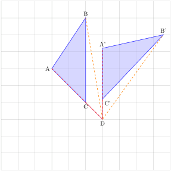

Have you ever watched the hands of a clock move, seen a merry-go-round spin, or noticed the Earth turning? These all involve rotation—the spinning of an object around a fixed point or axis. Rotation is everywhere!
When you ride a merry-go-round or ride a bicycle, the wheels rotate, making everything move smoothly. The Earth itself rotates, which gives us day and night. Even when you stir your drink, you’re creating a small rotation!
Rotation is a transformation that moves an object around a fixed point but its size and shape are not changed. Rotations are sometimes called turns. The point around which a rotation occurs is called the centre of rotation, and the distance a shape turns is called the angle of rotation
In this lesson, we will explore the beauty of rotation, understand its principles, and see how it plays a role in everything.
Subsection2.3.1Properties of Rotation
In the figure 2.3.1 below, triangle \(P'Q'R'\) is the image of triangle \(PQR\) under a transformation \(R\)
Figure2.3.1.
We create \(P'\) the image of \(P\) by turning \(OP\) around point \(O\) by \(90^\circ\) in anticlockwise direction. The same process is applied to \(Q\text{,}\) resulting in \(Q'\) and to \(R\) resulting in \(R'\) . This turning of points around a fixed center is called a rotation. In this case, point \(O\) is the centre rotation and angle \(90^\circ\) is the angle of rotation.
\(\textbf{Note:}\)
A rotation in the anticlockwise direction is taken to be positive i.e a rotation of \(45^\circ\) anticlockwise is \(+45^\circ\)
A rotation in the clockwise direction is taken to be negative i.e a rotation of \(45^\circ\) clockwise is \(-45^\circ\)
In general, for a rotation to be completely defined, the centre and angle of rotation must be stated.
Example2.3.2.
The coordinates of the vertices for triangle \(PQR\) that can be graphed in the coordinate plane are \((-8,-6)\text{,}\)\((-2,-6)\) and \((-5,-3)\) as shown below. The triangle is rotated through \(90^\circ\) in a clockwise direction about the origin to produce triangle \(P'Q'R'\text{.}\)Copy the figure and draw triangle \(P'Q'R'\)
Figure2.3.3.
Solution.
Figure2.3.4.
Subsubsection2.3.1.1Centre and Angle of Rotation
Activity2.3.1.
Work in pairs.
\(\textbf{What you need:}\) Graph paper, a ruler, a protractor and a pencil
On a piece of graph paper draw triangle \(ABC\) and its image \(A'B'C'\) as shown in the figure below.
Join point \(A\) to \(A'\) and construct a perpendicular bisector to \(AA'\) as shown below;
Similary Join point \(B\) to \(B'\) and \(C\) to \(C'\) and construct a perpendicular bisector to \(BB'\) and \(CC'\) as shown below;
Now join point \(O\) to \(C'\) and \(C\) and measusure \(\angle\, COC'\)
Similary join point \(O\) to \(B'\) and \(B\) and \(O\) to \(A'\) and \(A\)and measusure \(\angle\, BOB'\) and \(\angle\,AOA'\text{.}\) What do you notice?
Share your work with other leaners in class
\(\textbf{Note:}\)
Triangle \(A'B'C'\) is the image of triangle \(ABC\) after a rotation.The centre and angle of rotation can be found by drawing the perpendicular bisectors of the lines between two sets of points, \(C\) and \(C'\) and \(B\) and \(B'\) or \(A\) and \(A'\)
The point where two perpendicular bisectors intersect is called \(\textbf{the centre of rotation.}\) To find \(\textbf{ the angle of rotation}\text{,}\) join \(C'\) and \(C\) to the centre of rotation and measure the angle between these lines.
In the figures below, the triangle \(X'Y'Z'\) is the image of triangle \(XYZ\) after rotation. Find the centre and angle of rotation
Solution.
In order to determine the centre and angle of rotation we have to follow the following steps:
Join point \(Z\) to \(Z'\) and construct a perpendicular bisector to \(ZZ''\) as shown below
Also join point \(Y\) to \(Y'\) and construct a perpendicular bisector to \(YY'\) as shown below. Mark the point of intersection of perpendicular bisectors \(O\)
Similary you can join \(X\) to \(X'\) and construct a perpendicular bisector to \(XX'\)
\(\textbf{Note}\) You can use only two points.
The point where perpendicular bisectors intersect is the centre of rotation.
Now join \(Z\) and \(Z'\) to the centre of rotation \(O\text{.}\) Measure \(\angle, ZOZ'\) using a protractor.
Centre of rotation \(=(-1,1)\)
Angle of rotation \(=-160^\circ\) since rotation is done in a clockwise direction
ExercisesExercises
1.
In the figure below, triangle \(A'B'C'\) is the image of triangle \(ABC\) under a rotation, centre \(O\)
(a). By construction,find and lebel the centre \(O\) of roration.
(b) Determine the angle of rotation.
Subsection2.3.2Rotation on Different Planes
Rotation on different planes" refers to the concept of rotating an object or point around various axes within different planes in a three-dimensional space.
Subsubsection2.3.2.1Rotation in the Cartesian Plane
Activity2.3.2.
Work in pairs
(a)
Draw a large \(X-\) axis (horizontal) and \(Y-\) axis (Vertical) on a graph of paper. Mark the origin \((0,0)\) where the two axis meet.
(b)
Pick any point \(P\, (x,y)\) and plot this point on the plane and label it for example let;s use \(P\, (3,2)\text{.}\)
(c)
Rotate the point in a counterclockwise direction around the origin with different angles as shown below:
The image of point \(P\) remains the same when rotated through \(\pm\, 180^\circ\) (clockwise or counterclockwise) about the origin.
A rotation through \(\pm\, 360^\circ\) and \(0^\circ\) about the origin does not change the position of the object.
In summary, a point \((p,q)\) which is rotated through the indicated angles about the origin is shown in the table below.
Table2.3.6.
\(\textbf{Angle of rotation}\)
\(0^\circ\)
\(+90^\circ\)
\(-90^\circ\)
\(180^\circ\)
\(-180^\circ\)
\(+270^\circ\)
\(+360^\circ\)
\(-360^\circ\)
\(\textbf{image of (p,q)}\)
\((p,q)\)
\((-q,p)\)
\((q,-p)\)
\((-p,-q)\)
\((-p,-q)\)
\((q,-p)\)
\((p,q)\)
\((p,q)\)
The figure below shows triangle \(ABC\) and its images after rotations about the origin with different angles of rotation (\(90^\circ\text{,}\)\(180^\circ\text{,}\)\(270^\circ\) and \(360^\circ\)).
Figure2.3.7.
Table2.3.8.
\(\textbf{Object}\)
\(A\, (2,4)\)
\(A\, (2,4)\)
\(A\, (2,4)\)
\(A\, (2,4)\)
\(A\, (2,4)\)
\(A\, (2,4)\)
\(A\, (2,4)\)
\(A\, (2,4)\)
\(B\, (2,1)\)
\(B\, (2,1)\)
\(B\, (2,1)\)
\(B\, (2,1)\)
\(B\, (2,1)\)
\(B\, (2,1)\)
\(B\, (2,1)\)
\(B\, (2,1)\)
\(C\, (5,1)\)
\(C\, (5,1)\)
\(C\, (5,1)\)
\(C\, (5,1)\)
\(C\, (5,1)\)
\(C\, (5,1)\)
\(C\, (5,1)\)
\(C\, (5,1)\)
\(\textbf{Angle of rotation}\)
\(0^\circ\)
\(+90^\circ\)
\(-90^\circ\)
\(+180^\circ\)
\(-180^\circ\)
\(270^\circ\)
\(+360^\circ\)
\(-360^\circ\)
\(\textbf{Image point}\)
\(A\, (2,4)\)
\(A'\, (-4,2)\)
\(A\, (4,-2)\)
\(A''\, (-2,-4)\)
\(A''\, (-2,-4)\)
\(A'''\, (4,-2)\)
\(A\, (2,4)\)
\(A\, (2,4)\)
\(B\, (2,1)\)
\(B'\, (-1,2)\)
\(B\, (1,-2)\)
\(B''\, (-2-1)\)
\(B''\, (-2,-1)\)
\(B'''\, (1,-2)\)
\(B\, (2,1)\)
\(B\, (2,1)\)
\(C\, (5,1)\)
\(C'\, (-1,5)\)
\(C\, (1,-5)\)
\(C''\, (-5-1)\)
\(C''\, (-5,-1)\)
\(C'''\, (1,-5)\)
\(C\, (5,1)\)
\(C\, (5,1)\)
\(\textbf{Rotation of Points by a Given Angle Around a Specified Center}\)
Consider a point \(A\, (4,3)\) .We are required to finding the coordinates of its image after a Rotation taking the centre to be \((1,2)\) and angle of rotation to be \(90^\circ\) ;
\((4,3)\) is mapped onto \((0,5)\text{.}\)
Given the point \((4,3)\) and the centre of rotation \((1,2)\text{,}\) To obtain this point \((0,5)\) without a graph, We follow this steps;
\begin{align*}
\text{x-coordinate}= \amp 1-(3-2)=0\\
\text{y-coodinate}= \amp 2+(4-1)=5\\
\text{Point of the image}= \amp (0,5)
\end{align*}
from the given points, for point \((4,3)\text{,}\)We let \(p=4\) and \(q=3\) and for the given centre \((1,2)\) we let \(x=1\) and \(y=2\text{.}\)
\(\textbf{In general a point (p,q) rotated through 90° about the centre (x,y) is mapped on to the point (x-(q-y)\, ,y+(p-x))}\)
Considering the same point \(P\text{,}\) but now the angle of rotation to be \(180^\circ\text{;}\) To find the coordinates of its image we follow the following steps:
Given the point \((4,3)\) and the centre of rotation \((1,2)\text{,}\) To find the point of the image we follow the following steps;
\(\textbf{In general a point (p,q) rotated through 180° about the centre (x,y) is mapped on to the point (2x-p\, ,2y-q)}\)
Example2.3.9.
A triangle \(ABC\) with coordinates \(A\,(2,1)\text{,}\)\(B\, (3,2)\) and \(C\, (3,4)\) is rotated through the centre and angle of \(90^\circ\) in a clockwise direction.Find the coordinates of its image
Solution.
Since triangle \(ABC\) is rotated in a clockwise direction with an angle of \(90^\circ\) through the origin, then the angle of rotation is \(-90^\circ\)
According to the rule, If we have our points \((p,q)\) which will be mapped to \((q,-p)\) if rotated through the centre and angle of rotation is \(-90^\circ\)
Therefore, we will individually apply the rotation formula to all three given points.
\begin{align*}
A (2,1) \rightarrow\amp A'(1,-2)\\
B (3,2) \rightarrow\amp B'(2,-3)\\
C (3,4) \rightarrow\amp C'(4,-3)
\end{align*}
The coordinates of triangle \(A'B'C'\) are \(A'\, (1,-2)\text{,}\)\(B'\, (2,-3)\) and \(C'\, (4,-3)\)
ExercisesExercises
1.
A point \(P\, (4,3)\) maps onto \(P'\, (-1,4)\) under a rotation R centre \((1,1)\text{.}\) Find the angle of rotation.
2.
Describe the rotation which maps the rectangle whose verticies are \(P\, (2,2)\text{,}\)\(Q\, (6,2)\text{,}\)\(R\,(6,4)\) and \(S\, (2,4)\) onto a rectangle whose verticies are \(P'\,(2,-2)\text{,}\)\(Q'\,(2,-6)\text{,}\)\(R'\,(4,-6)\) and \(S'\, (4,-2)\)
3.
Give the coordinates of the image of each of the following points when rotated through \(180^\circ\) in a clockwise direction about \((2,1)\)
(a) (4,-2)
(b) (-2,2)
(c) (4,4)
(d) (-2,-1)
(e) (-3,2)
4.
Find the coordinates of the verticies of the image of a triangle whose verticies are \(P\, (-4,6)\text{,}\)\(Q\, (-4,2)\) and \(R\, (-2,2)\) when rotated about the origin through:
(a) \(-90^\circ\)
(b) \(-180^\circ\)
(c) \(270^\circ\)
5.
The parallelogram whose verticies are \(A\, (4,4)\text{,}\)\(B\, (8,4)\text{,}\)\(C\, (2,2)\) and \(D\, (6,2)\) is rotated to give an image whose verticies are \(A'\, (4,-2)\text{,}\)\(B'\, (4,-6)\text{,}\)\(C'\, (2,0)\) and \(D'\, (2,-4)\text{.}\) Find the centre and angle of rotation.
Subsection2.3.3Rotational Symmetry
Rotational symmetry refers to the property of an object where it can be rotated (turned) around a central point and still look the same. In other words, if you spin the shape around its center, it matches its original position multiple times in a full \(360^\circ\) rotation.
Subsubsection2.3.3.1Determining the order of rotational symmetry of plane figures
Activity2.3.3.
Here is a fun activity to introduce you to rotatonal symmetry.
Materials
A printed copy of the figure.
Pencils, push pin.
Constuction paper.
Pair of scissors.
Instructions
On a construction paper, trace and cut the figure above.
Place the tracing on top the printed copy and place a pin through their centre such that the tracing can rotate.
Manually rotate the tracing around the centre and note how many times the shape looks exactly the same in one full turn \((360^\circ).\)
Discussion
The number of times the tracing of the star fits onto the printed copy in one complete turn is \(5 \) times. This is called the order of symmetry, that is, the number of times the figure fits onto itself in one complete turn.
When given a figure with the measure of the angle between the identical parts, the order of rotational symmetry can be computed as shown.
\begin{equation*}
\text{ Order of rotational symmetry} = \frac{360^\circ}{\text{angle between the identical parts}}
\end{equation*}
Example2.3.10.
Find the order of rotational symmetry in the figure below.
Solution.
\begin{equation*}
\text{ Order of rotational symmetry} = \frac{360^\circ}{\text{angle between the identical parts}}
\end{equation*}
\begin{equation*}
\text{ Order of rotational symmetry} = \frac{360^\circ}{45^\circ}
\end{equation*}
\begin{equation*}
\text{ Order of rotational symmetry} = 8
\end{equation*}
ExercisesExercises
1.
State the order of symmetry in the figures below.
2.
Find the order of rotational symmetry in the letters of the alphabet.
Subsubsection2.3.3.2Determining the axis of rotation and order of rotational symmetry in solids
1. Triangular prism
A solid has rotational symmetry if it can be rotated about a fixed straight line and still appears to be the same.
The straight line around which the object is rotated is called axis of rotation.
The figure below shows a triangular prism whose cross-section is an equialteral triangle.
The axis of rotation passes through the traingular face. Therefore, the order of rotation through this axis is \(3.\)
The prism also has other \(3\) axes of rotation with each axis having \(2\) orders of rotational symmetry as shown in the figure below:
2. Cone
A cone has one axis of rotation with infinite numbers of order of rotational symmetry since its base is circular.
3. Regular tetrahedron
A regular tetrahedron has 3 axes of rotational symmetry. These axes pass through each vertex and the centroid of the opposite face.
For the regular tetrahedron below, the axis of rotational symmetry are as follows:
An axis through \(A\) and passing at the center of the face \(BDC.\)
An axis through \(B\) and passing at the center of the face \(ACD.\)
An axis through \(C\) and passing at the center of the face \(ABD.\)
An axis through \(D\) and passing at the center of the face \(ABC.\)
For each axis of rotation in the tetrahedron, the tetrahedrom fits the original position \(3\) times in one full rotation.
Subsection2.3.4Rotation and Congruence
Congruence refers to a relationship between two figures or objects, whereby, they are identical in size and shape.
Rotation is a type of transformation that repositions an object but preserves the shape and size of the object. Thus, rotation produces congruent figures.
Example2.3.11.
Triangle \(ABC\) is mapped onto \(A'B'C'\) after a rotation of \(-45^\circ\) and centre of rotation \(D.\)

\(\Delta ABC \text{ and } \Delta A'B'C'\) have the same shape and size.
The length of the corresponding sides of \(\Delta ABC \text{ and } \Delta A'B'C'\) are the same.
Every corresponding internal angle for the triangles remain the same.
Therefore, \(\Delta ABC \text{ and } \Delta A'B'C'\) are said to be directly congruent.
ExercisesExercises
1.
Identify the axes of rotational symmetry and their respective order in the following:
Cylinder
Rectangular pyramid
Sphere
Cube
2.
Identify the axes of rotational symmetry and their respective order for the following figures: